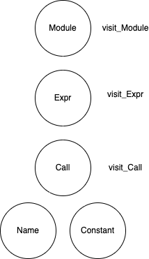
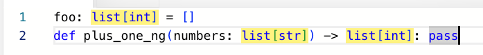
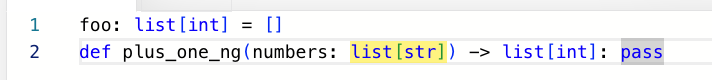

Pythonのリンタを作ろう
- Event:
PyCon mini Shizuoka 2026
- Presented:
2026/02/21 nikkie
訂正：リンタの ルール を作ろう
皆さまお使いのリンタは？
Ruff
flake8
pylint
対象：仕組みは分からないが、1つでも 動かしたことがある
お前、誰よ
nikkie（にっきー）・Python歴8年・ブログ 連続1100日突破
機械学習エンジニア。 Speeda AI Agent 開発（We're hiring!）
拡張 できるものが好き
公開している flake8 プラグイン @ftnext
Ruff 使ってます（速さ & 簡単さ）
導入：あなたはリンタのルールを書きたくなる
スタイルガイド PEP 8
見た目について（例：演算子と半角スペース） [2]
このようなPythonを 書いてはいけません （代わりにこう書きましょう）
このトークでリンタが指しているのはこちら
例「このように書いてはいけません」 [3]
def foo():
try:
1 / 0
finally:
return 42PEP 8 以外の例：ログメッセージにf-stringはいけません [4]
logger.info(f"{user} - Something happened")logger.info("%s - Something happened", user)スタイルガイドはリンタにチェックさせよう
人間は全てのルールを覚えていられない
書いてはいけないPythonの 指摘をリンタに任せる
効能：コードレビューの焦点がスタイルから本質的なロジックへ
コーディングエージェントにリンタを持たせる
IMO：LLMは（性能向上は甚だしいが）Pythonを十分には理解していない
例：先のログメッセージのf-string
フック機能でリンタを組み込み スタイルガイドを強制する [5]
「指摘したいルールが誰にも公開されていない」問題
リントルールは 800 以上あるが、自分が欲しいルールが存在しないことがある
def plus_one_ng(numbers: list[int]) -> list[int]:
return [n + 1 for n in numbers]引数の型ヒントをlistにしてはいけません
plus_one_ng((1, 2, 3)) # collections.abc.Sequence
plus_one_ng(range(3)) # collections.abc.Iterabletyping.List のドキュメントより
Note that to annotate arguments, it is preferred to use an abstract collection type such as
SequenceorIterablerather than to uselistortyping.List.
collections.abc.Sequence や collections.abc.Iterable などの 抽象 型が好ましい
flake8-kotoha を自作しました
$ uvx --with flake8-kotoha flake8 lint-targets/use_iterable.py
lint-targets/use_iterable.py:6:17: KTH101 Type hint with abstract type `collections.abc.Iterable` or `collections.abc.Sequence`, instead of concrete type `list`def plus_one_ok(numbers: Iterable[int]) -> list[int]:
return [n + 1 for n in numbers]ルールを書きたくなってきましたよね？
「引数の型ヒントをlistにしてはいけません」を例に
- 1. Pythonで書く:
例として flake8プラグイン
- 2. Ruff では？:
意見 を伝えるので考えるきっかけに
リンタのルールをPythonで書く
そのためにまず2つ押さえましょう
抽象構文木（AST: Abstract Syntax Tree）
GoF のデザインパターンの Visitor
「このように書いてはいけません」の実装
「書いてはいけないパターン」をASTで 表現
それを Visitor パターンで 見つける
おすすめ：LintオタクによるLint解説（Lint Night #1） 🏃♂️
準備1️⃣ AST
ソースコードを 木構造 のデータとして表現したもの
ソースコードをトークンに分ける [6]
トークンを構文を表す構造（木）に変換する
標準ライブラリの ast モジュール [7]
$ echo 'print("静岡")' | python -m ast
Module(
body=[
Expr(
value=Call(
func=Name(id='print', ctx=Load()),
args=[
Constant(value='静岡')]))])ソースコードをASTに変換 [8] 🏃♂️
>>> import ast
>>> tree = ast.parse('print("静岡")')ASTを表示 [9] 🏃♂️
>>> print(ast.dump(tree, indent=3))
Module(
body=[
Expr(
value=Call(
func=Name(id='print', ctx=Load()),
args=[
Constant(value='静岡')]))])print("静岡") のASTを読む
Module(
body=[
Expr(
value=Call(
func=Name(id='print', ctx=Load()),
args=[
Constant(value='静岡')]))])
ast.Module
どんな式（文）か
Module(
body=[
Expr(
value=Call(
func=Name(id='print', ctx=Load()),
args=[
Constant(value='静岡')]))])
ast.Call：関数呼び出し
funcに組み込み関数のprintargsに位置引数
value=Call(
func=Name(id='print', ctx=Load()),
args=[
Constant(value='静岡')]))])
準備2️⃣ Visitor パターン
やりたいこと：木の中の特定のノードを見つけたい（例：
print関数）操作を 訪問者 （Visitor）に書き、データ構造は訪問者を受け入れる [11]
ast.NodeVisitor
抽象構文木を渡り歩いてビジター関数を見つけたノードごとに呼び出すノード・ビジターの基底クラスです。
継承 したクラスを実装する
例：print を見つける
class PrintFinder(ast.NodeVisitor):
def visit_Call(self, node):
if isinstance(node.func, ast.Name) and node.func.id == "print":
args = [arg.value for arg in node.args]
print(f"Found print at line {node.lineno}, args {args}")
self.generic_visit(node)
実行結果
source = """\
print("静岡")
len("静岡")
print("最高")
"""
tree = ast.parse(source)
PrintFinder().visit(tree)
Found print at line 1, args ['静岡']
Found print at line 3, args ['最高']PrintFinder.visit()
親クラス
NodeVisitorで定義されているvisitは ノードのクラス名から visit_クラス名 メソッド を呼び出すhttps://docs.python.org/ja/3/library/ast.html#ast.NodeVisitor.visit
NodeVisitor.visit() 🏃♂️
class NodeVisitor(object):
def visit(self, node):
method = 'visit_' + node.__class__.__name__
visitor = getattr(self, method, self.generic_visit)
return visitor(node)https://github.com/python/cpython/blob/v3.14.3/Lib/ast.py#L482-L516
visitのイメージ
{kind=link}

関数呼び出しノードに対する visit_Callを追加
class PrintFinder(ast.NodeVisitor):
def visit_Call(self, node):
if isinstance(node.func, ast.Name) and node.func.id == "print":
args = [arg.value for arg in node.args]
print(f"Found print at line {node.lineno}, args {args}")
self.generic_visit(node)
Module(
body=[
Expr(
value=Call(
func=Name(id='print', ctx=Load()),
args=[
Constant(value='静岡')]))])
再帰的にvisit
class PrintFinder(ast.NodeVisitor):
def visit_Call(self, node):
if isinstance(node.func, ast.Name) and node.func.id == "print":
args = [arg.value for arg in node.args]
print(f"Found print at line {node.lineno}, args {args}")
self.generic_visit(node)
generic_visit：子ノードのvisitメソッド呼び出し
ルールを書く準備、OK？
- 抽象構文木:
astモジュールで確認できる- Visitorパターン:
ast.NodeVisitorを継承。visit_ノードのクラス名を実装
ASTのノードを巡回して、特定の条件のノード を見つけられます！
「引数の型ヒントをlistにしてはいけません」を書く
class ArgumentListTypeHintChecker(ast.NodeVisitor):
def visit_arg(self, node):
annotation = node.annotation
if isinstance(annotation, ast.Subscript) and annotation.value.id == "list":
as_is = f"{node.arg}: {annotation.value.id}[{annotation.slice.id}]"
print(f"Fix type hint `{as_is}` at {node.lineno}:{node.col_offset}")
self.generic_visit(node)
関数定義のAST（抜粋）
FunctionDef(
name='plus_one_ng',
args=arguments(
args=[
arg(
arg='numbers',
annotation=Subscript(
value=Name(id='list', ctx=Load()),
slice=Name(id='int', ctx=Load()),
ctx=Load()))]),
ast.FunctionDef
ast.argumentsが関数の引数全体1つ1つの引数 が ast.arg
annotationに型ヒント
ast.arg の annotation
FunctionDef(
name='plus_one_ng',
args=arguments(
args=[
arg(
arg='numbers',
annotation=Subscript(
value=Name(id='list', ctx=Load()),
slice=Name(id='int', ctx=Load()),
ctx=Load()))]),
ast.Subscript: ジェネリック型（
def func(d: list[int])）
実行結果🙌
def plus_one_ng(numbers: list[int]) -> list[int]:
return [n + 1 for n in numbers]
def plus_one_ok(numbers: Iterable[int]) -> list[int]:
return [n + 1 for n in numbers]Fix type hint `numbers: list[int]` at 1:16annotation のパターン 🏃♂️
None: 型ヒントなし（def func(a)）ast.Name: 単純な型（def func(b: int)）ast.Attribute: 修飾名（def func(tree: ast.AST)）
小まとめ🥟 リンタのルールをPythonで書く
ASTとVisitorパターン
ast.NodeVisitorを継承して visit_ノードのクラス名 を実装「引数の型ヒントをlistにしてはいけません」ルールをPythonで実装できた
flake8にルールを追加する
Python製リンタ https://github.com/PyCQA/flake8
先の実装をflake8のインターフェースに合わせるだけ
Pythonパッケージとしてメタデータを書く
(1)flake8プラグインのインターフェース
AST型プラグイン：flake8がパース済みの
ast.ASTを渡してくれる__init__(self, tree: ast.AST): ASTを受け取る
class Flake8KotohaPlugin:
def __init__(self, tree: ast.AST) -> None:
self._tree = tree
(1)flake8プラグインのインターフェース
run()メソッド: 4-tuple(行番号, 列番号, メッセージ, 型)をyieldチェッカーは
printする代わりにself.errorsリストへの蓄積に変更
class Flake8KotohaPlugin:
def run(self) -> Generator[tuple[int, int, str, Type[Any]], None, None]:
checker = ArgumentListTypeHintChecker()
checker.visit(self._tree)
for lineno, col_offset, message in checker.errors:
yield (lineno, col_offset, message, type(self))
(2)パッケージング（メタデータの書き方）
[project]
dependencies = ["flake8"]
[project.entry-points."flake8.extension"]
KTH = "kotoha_plugin:Flake8KotohaPlugin"
pylint でもプラグインとして書ける 🏃♂️
標準ライブラリastでなく astroid を使って AST を表現 [12]
$ pylint --load_plugins kotoha_plugin use_iterable.pyおすすめ：コーディング規約自動化 Pylintのカスタムルールを作ろう 🏃♂️
Rust製リンタにルールをどう追加するか
Pythonでルールを追加できるようになったものの...
Ruff（図はREADMEより）
https://github.com/astral-sh/ruff
An extremely fast Python linter and code formatter, written in Rust.

Astral「Ruff だけあればいいでしょ」
数々のリンタ・フォーマッタをRuffに 統合
Ruff can be used to replace Flake8 (plus dozens of plugins), Black, isort, pydocstyle, pyupgrade, autoflake, and more,
ルールを再実装し、800超えをカバー [13]
コマンド例 [14]
uvx ruff format
uvx ruff check --fix --extend-select I
# または uv format # >= 0.8.13昨日の Ruff 0.15.2 からデフォルトルールが 爆増 してます
Ruffにはプラグイン機構が無い🈚️
ルールの追加は、本家へのプルリクエストが案内される（CONTRIBUTING.md）
Meta issue: plugin system #283 (2023/09 2年半以上オープン。放置？)
自分に必要なルールを 手元でRuffに追加できない 状態
Why Astral?
高速ツールに最大級の感謝を示しつつも、率直に言って困ってます
拙ブログ RuffはFlake8の全ての要素を含んでいる、のでしょうか？ ― 否（互換でない）
速さを優先すると、機能の豊かさを失う （RuffやAstralはもっとうまく立ち回れるはず）
Ruff + カスタムルール をどう実現するか？
flake8（やpylint）との併用はない。せっかくの速さを失う
高速さを損なわずにカスタムルールを書く方法 を求めてます（アイデア募集。廊下希望）
IMO：代替手段
ast-grep: Rust製ツール、カスタムルールを YAML で書く
Rust で直接書いてみる: RustPython/Parser
🅰️ ast-grep
https://github.com/ast-grep/ast-grep
ast-grep is an abstract syntax tree based tool to search code by pattern code.
ASTでgrep できる！
使い方（一例）
$ uvx --from ast-grep-cli ast-grep scan --rule ast-grep-kotoha.yaml examples.pyYAMLでルールを書く
id: do-not-use-list-as-typed-parameter
language: Python
rule:
pattern:
context: 'a: list[$TYPE]'
selector: type
inside:
kind: typed_parameter
fix: Iterable[$TYPE]
ast-grepにおけるAST
def plus_one_ng(numbers: list[str]) -> list[int]: pass (function_definition [0, 0] - [0, 54]
name: (identifier [0, 4] - [0, 15])
parameters: (parameters [0, 15] - [0, 35]
(typed_parameter [0, 16] - [0, 34]
(identifier [0, 16] - [0, 23])
type: (type [0, 25] - [0, 34]
(generic_type [0, 25] - [0, 34]
(identifier [0, 25] - [0, 29])
(type_parameter [0, 29] - [0, 34]
(type [0, 30] - [0, 33]
(identifier [0, 30] - [0, 33])))))))
list[] という型ヒントにマッチ
rule:
pattern:
context: 'a: list[$TYPE]'
selector: type

親ノードの指定を追加
typed_parameter の直下の type
rule:
pattern:
context: 'a: list[$TYPE]'
selector: type
inside:
kind: typed_parameter

ast-grepは実は tree-sitter による 🏃♂️
ast-grep's core is an algorithm to search and replace code based on abstract syntax tree produced by tree-sitter.
tree-sitter は多言語対応
tree-sitter クエリの例 [15] 🏃♂️
(typed_parameter
(identifier) @param_name
type: (type
(generic_type
(identifier) @type_name
(type_parameter
(type
(identifier) @inner_type))))
(#eq? @type_name "list"))
🅱️ 発展：Rustで書く
この部分だけRustの知識を前提にします
雰囲気だけ掴んでいただければ！
RustPython/Parser
RustPythonが使うPythonパーサ（Rust製）
Ruffもかつて使っていた [16]
Rust環境セットアップ
rustup でRust環境を導入
cargo でRustのプロジェクトを管理
AstralはPythonにおけるcargoとしてuvを提案している
PythonコードをRustでパース
use rustpython_parser::{Parse, ast};
fn main() {
let python_source = r#"
def plus_one_ng(numbers: list[int]) -> list[int]:
return [n + 1 for n in numbers]
"#;
let ast = ast::Suite::parse(python_source, "<embedded>");
assert!(ast.is_ok());
println!("{:#?}", ast.unwrap());
}RustPython/ParserのAST
StmtFunctionDef {
range: 1..86,
name: Identifier(
"plus_one_ng",
),
args: Arguments {
range: (),
posonlyargs: [],
args: [
ArgWithDefault {
range: (),
def: Arg {
range: 17..35,
arg: Identifier(
"numbers",
),
annotation: Some(
Subscript(
ExprSubscript {
range: 26..35,
value: Name(
ExprName {
range: 26..30,
id: Identifier(
"list",
),
ctx: Load,
},
),
slice: Name(
ExprName {
range: 31..34,
id: Identifier(
"int",
),
ctx: Load,
},
),
ctx: Load,
},
),
),
type_comment: None,
},
default: None,
},
],
rustpython-astのvisitor feature
use rustpython_ast::{Arguments, Visitor};
struct KotohaVisitor<'a> {
source: &'a str,
}
impl Visitor for KotohaVisitor<'_> {
fn visit_arguments(&mut self, node: Arguments) {
// ここに処理を書く
}
}Python実装と同様の指摘
def plus_one_ng(numbers: list[int]) -> list[int]:
return [n + 1 for n in numbers]
def plus_one_ok(numbers: Iterable[int]) -> list[int]:
return [n + 1 for n in numbers]$ cargo run -q
Fix type hint `numbers: list[int]` at 2:17小まとめ🥟 Rust製リンタにルールをどう追加するか
プラグインがないRuffをカスタムルールと一緒に動かしたい
ast-grep：Rust製ツールで、YAMLでルールを書く
RustPython/Parserを使って Rustも書いてみた （生成AIサポート）
まとめ🌯 Pythonのリンタのルールを作ろう
Pythonコードのスタイルの指摘はリンタに任せよう
自分が欲しいルールが見つからないときは 自分で書こう
Pythonでリンタのルールを書く
標準ライブラリastで抽象構文木を見ながら 指摘したいPythonノードの処理をvisitorに追加
既存のリンタのプラグインにしてルール追加
💡ルールが書けたら、CLIからのファイルの読み込みなどを足していけばリンタが作れるじゃん！
Ruff + カスタムルール
ast-grep（YAML でルールを書く）
この機会にRustを書いちゃおう🌟
Astralはさすがにそろそろプラグインを追加してください🙏（私も挑みます）
ご清聴ありがとうございました！
Happy Python Development♪